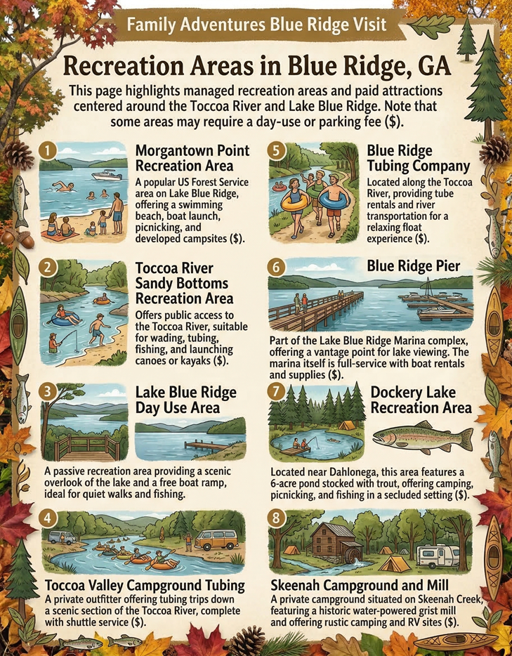

Your Way to the Haven
We are located at 421 Weeks Creek Rd. Please note that while the drive is beautiful, mountain roads can be tricky for GPS.
⚠️ The "No Service" Pro-Tip
Cell service drops significantly as you enter the Aska Adventure Area. **Load your GPS directions while you are still in downtown Blue Ridge or at home.** Once you arrive, our High-Speed Fiber Wi-Fi will get you back online instantly!
Tip: Look for the 'Welcome Friends' cedar sign at the driveway just after the road splits. Stay left.
Nearby Recreation Areas
Sandy Bottoms
Perfect for **river access** and shallow water wading. A great spot to launch a tube or just sit by the Toccoa River.
Deep Hole
A popular **fishing and camping** area. Known for its deeper waters, it's a favorite starting point for many kayaking trips.
Lake Blue Ridge
Only 20 minutes away. Visit the **Morganton Point Recreation Area** for swimming, boat rentals, and lakeside picnics.
